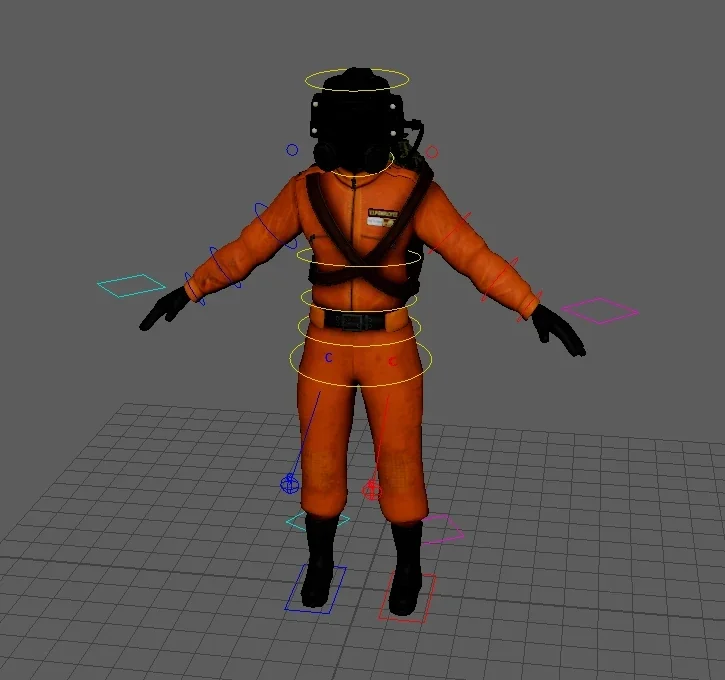
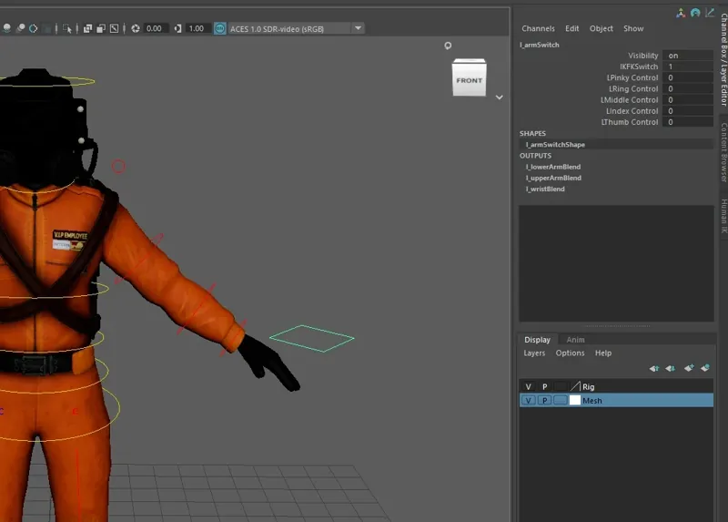
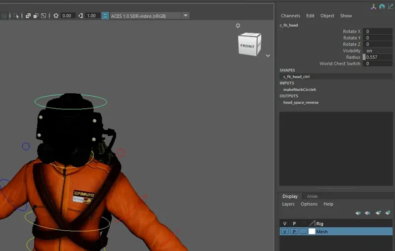

One of my assignments in 2024/25 was to rig and animate a character fully in Maya. At first it seemed like a daunting task, and Maya was definitely not my cup of tea, but I pulled through and scored 88% for the module.
The character model is a Lethal Company model from Sketchfab, so I didn’t make it. The rig, skinning and animation are all my own work.
- Role
- Rigging, skin weights, animation, engine setup
- Course
- Foundation Degree, Games Technologies
- Grade
- 88%
- Output
- 8 animations, 2 made for additive blending
- Software
- Maya, Unreal Engine
Animations
I made eight animations: idle, walk, run, look around, stretch, wave, dance and death. Each one had its own challenges and quirks, and I worked to keep them cohesive and consistent in quality. Two of them were made specifically for additive blending with the others inside the engine.
The rig
I built the rig with accurate skin weights and controls that are easy to use, so animating it later would be quick.
- IK/FK arms. A switch control on each arm blends the upper arm, lower arm and wrist between the IK and FK chains.
- Finger controls. Curls for each finger live as attributes on the arm switch, so the whole hand poses from one control.
- Head space switching. The FK head control can follow the chest or hold its orientation in world space.
- Readable controls. Left and right are colour coded, with IK foot controls, knee pole vectors and rings around the torso.
{kind=link}

{kind=link}

{kind=link}

This project is also on ArtStation, with a subtitled breakdown video.